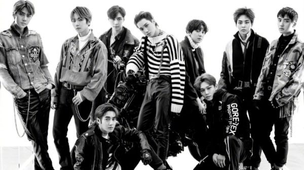
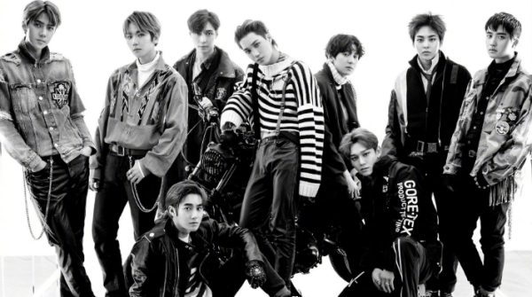
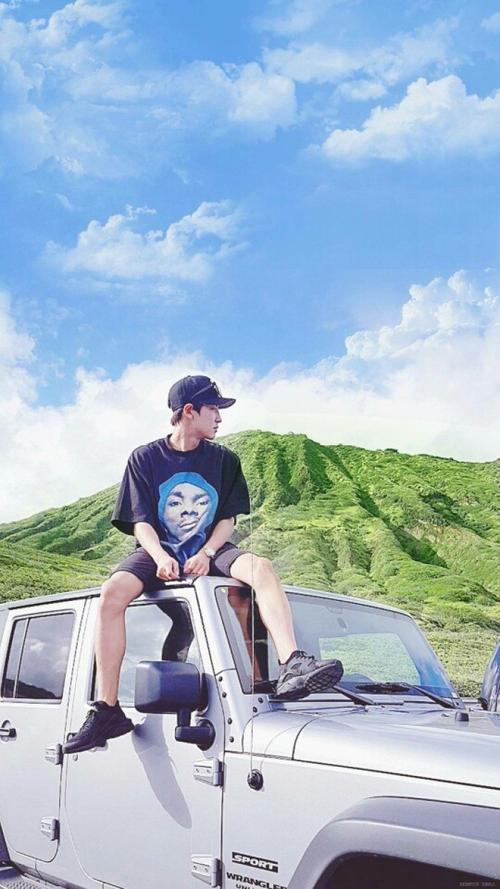
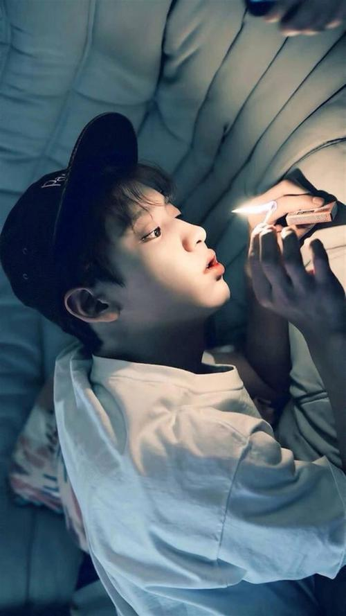

김민석（XIUMIN）김준면（SUHO）레이（LAY）변백현(Baek Hyun) 김종대（CHEN) 도경수(D.O) 김종인(KAI) 오세훈（SEHUN)
김민석（XIUMIN）김준면（SUHO）레이（LAY）변백현(Baek Hyun) 김종대（CHEN) 도경수(D.O) 김종인(KAI) 오세훈（SEHUN)
Chanyeol formed a band with his friends in high school. In 2008, participated in the school uniform model selection contest; In the same year, he entered S.M Entertainment through SMCasting System and became a trainee. He also participated in UCC advertisements of TVCS together with SUHO and KAI.Here are photos from Chanyeol's early years
 